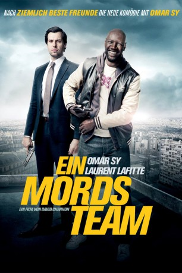
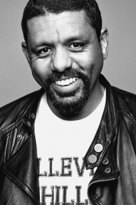

#6581 Ein MordsTeam
 
 IMDB-Wertung: 5.8 / 10
IMDB-Wertung: 5.8 / 10  Metascore: 0
Metascore: 0 
Ousmane ist mit seiner Jeans, der Kapuzenjacke und einer großen Klappe alles andere als ein Vorzeigepolizist, aber sein Revier ist ja auch die berüchtigte Pariser Vorstadt Bobigny. Dort beschattet er seit sechs Monaten einen kriminellen Ring der Pariser Unterwelt und ist den ganz großen Fischen auf der Spur. Als die Leiche der Frau von Frankreichs wichtigstem Industriellen in seinem Viertel entdeckt wird, erscheint plötzlich der versnobte François von der Pariser Mordkommission auf der Bildfläche. Ousmanes Recherchen und dieser Fall scheinen in Verbindung zu stehen. Dies zwingt die beiden Männer nun zur ungewollten Zusammenarbeit. Ein unkonventioneller Vorstadtbulle mit Prinzipien und ein triebhafter Schreibtischhengst mit Standesdünkel – Chaos bei den Ermittlungen ist vorprogrammiert…
Jahr: 2012
Dauer: 95 Minuten
FSK: 12
Land: Frankreich Studio: Senator FilmTonspuren:
Untertitel:
Auflösung: 1080p (1920x808) Größe: 5068 MB
Genre: Action, Komödie, Krimi
Regisseur: David Charhon
Drehbuch: Eric Altmayer
Soundtrack:
Darsteller:
 Omar Sy als Ousmane Diakhité
Omar Sy als Ousmane Diakhité Laurent Lafitte als François Monge
Laurent Lafitte als François Monge Sabrina Ouazani als Yasmine
Sabrina Ouazani als Yasmine-  Youssef Hajdi als Giovanni / Nabil
 Zabou Breitman als Commissaire Morland
Zabou Breitman als Commissaire Morland Xavier Lemaître als Lionel
Xavier Lemaître als Lionel- Jean-Noël Martin als Le majordome
- Katia Tchenko als La tenancière de la Volière
 Jassem Mougari als Jeune 1
Jassem Mougari als Jeune 1 Affif Ben Badra als Homme tripot
Affif Ben Badra als Homme tripot- Jean-Charles Rousseau als Policier poursuite
- Jean-François Lenogue als Homme station-service
- Lionel Abelanski als Daniel Cardinet
- Maxime Motte als Van Gogh
- Léo Léothier als Gérard
- André Marcon als Chaligny
- Patrick Bonnel als Balard
- Roch Leibovici als Patrick
- Rebecca Azan als Laurence
- Tchewk Essafi als Samir
- Patrick Kodjo Topou als Tyson
- Samuel Goreini als Sam
- Zohra Benali als Mme Beyoud, la mère de Nabil
- Mahamadou Sangaré als Yves
- Claudine Delvaux als La concierge
- Laurent Berthet als Gilles Lagache
- Ritha Kouoh als La mama
- Allain Naron als Le légiste
- Alain Fourès als Homme samu social
- Claire Théodoly als Femme samu social
- Christine Hooper als La réceptionniste
- Agnès Parmentier als Éponine Chaligny
- Marie-Clotilde Ramoz Ibañez als La fille de la Volière
- Saber Hallout als Jeune 2
- Jade Charhon als Petite fille riche
- Solal Charhon als Petit garçon riche
- Aïda Touihri als
- Sean Guégan als Jeune au scooter
- François Bourdillon als Barbéris
- Virginie Arnaud als Femme tripot
- Vincent Bersoulle als Homme tripot
- Jean-Marc Bellu als Homme tripot
- Frédéric Dessains als Homme tripot
- Patrice Cossoneau als Homme tripot
- Monia Moula als Policier poursuite
- Justine Poiret als Femme station-service
- Sylvain Gabet als Policier poursuite
- Jean-Claude Lagniez als Chauffeur du bus
- Julien Briche als Chauffeur Barbéris
- Fabrice Colson als Barman , uncredited
Datei: X:\2012(G-M)\MordsTeam, Ein (2012, FSK12, 1920x808).mkv seit 14.07.2017
Festplatte: HD 2012(A-M)
 Es gibt insgesamt 112 Filme in der Gruppe '2012(G-M)'
Es gibt insgesamt 112 Filme in der Gruppe '2012(G-M)'